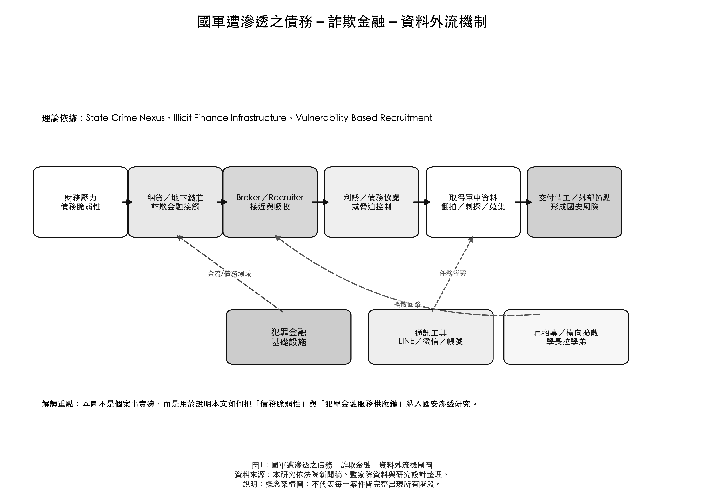
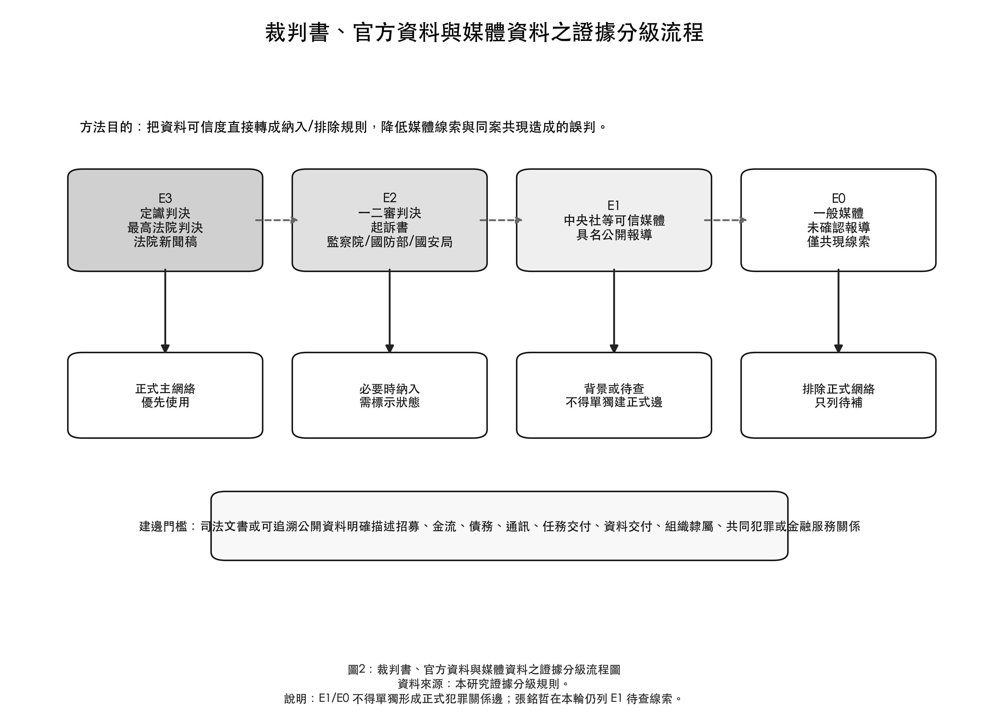
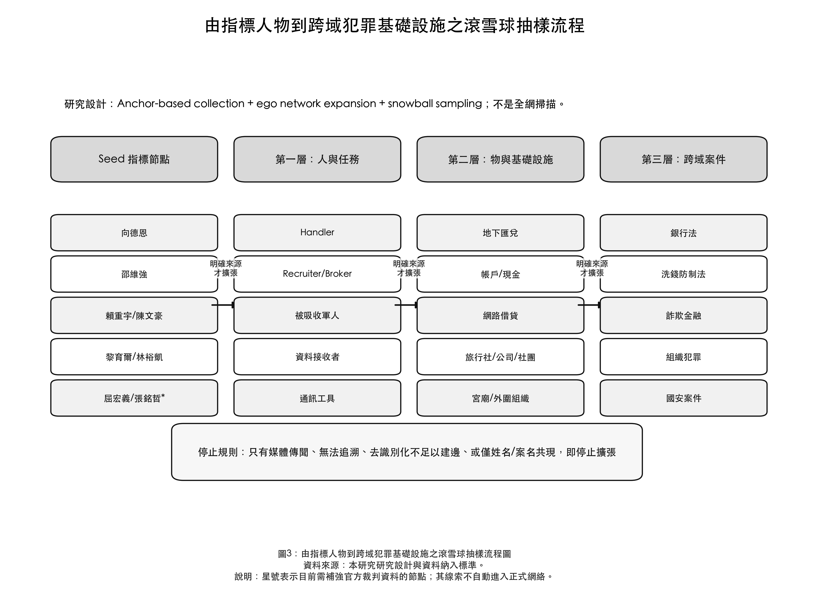
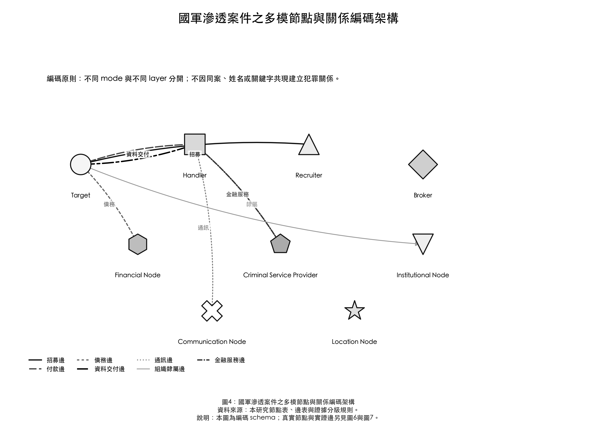
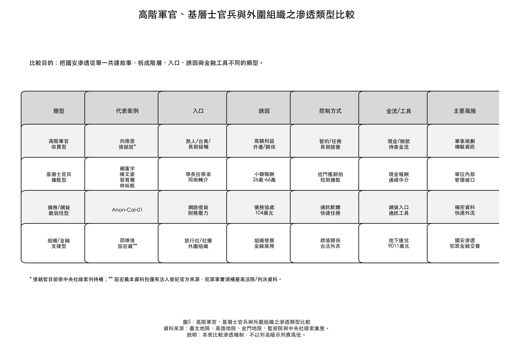
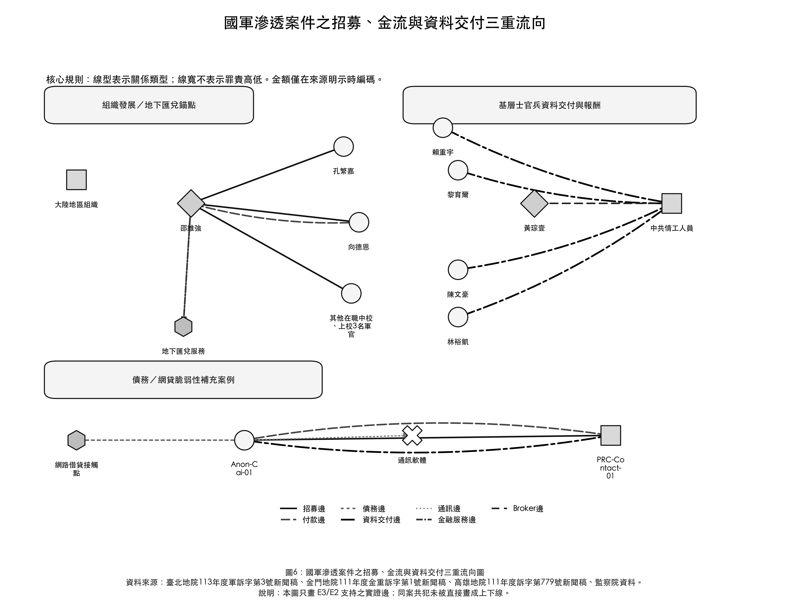
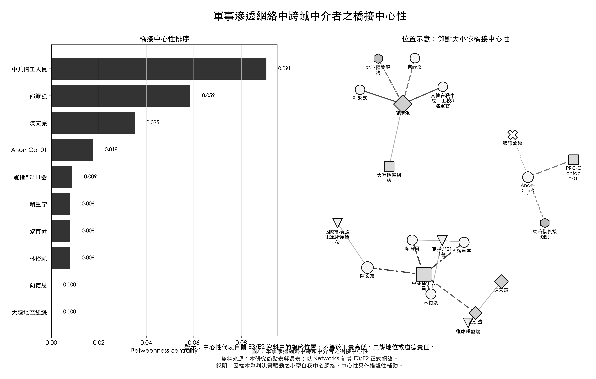
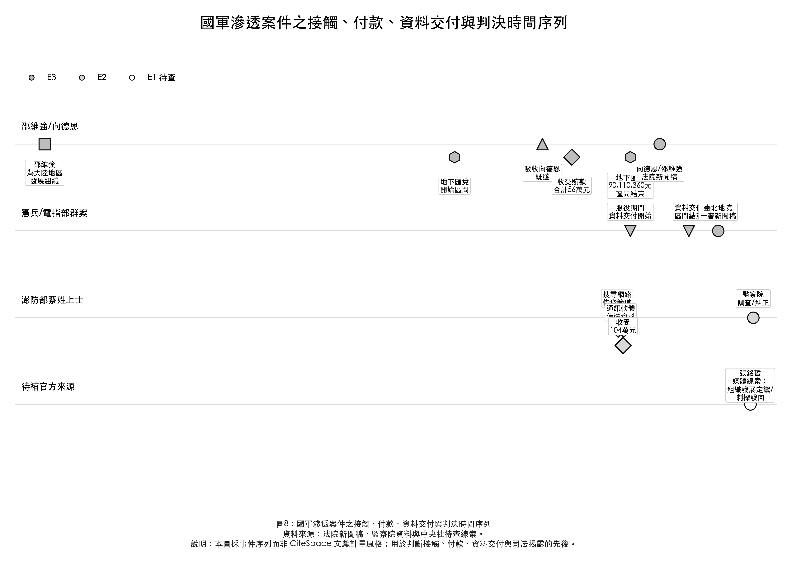

國軍遭滲透之債務—詐欺金融—資料外流機制圖

本文主題：本文主題是敵對勢力如何在國安滲透中借用犯罪金融基礎設施，並使債務脆弱性成為吸收與控制軍人的中介機制。
圖表目的：以理論架構整合 RQ1 滲透入口與 RQ2 犯罪金融基礎設施問題。
問題意識：若只把案件寫成個別共諜敘事，會看不見錢、債務、通訊與資料外流之間的行動鏈。
繪圖理由與理論依據：依 State-Crime Nexus、Illicit Finance Infrastructure 與 Vulnerability-Based Recruitment 建構；圖中節點是機制環節，不是個案實證邊。
閱讀方式：由左至右讀取：財務脆弱性進入網貸/地下金融場域，再經 broker/recruiter 接近，形成利誘、脅迫、資料取得與交付，最後帶出再招募與國安風險。
推論限制：此圖為概念圖，不表示每一案件皆完整出現所有階段。
裁判書、官方資料與媒體資料之證據分級流程圖

本文主題：本文主題要求把國安滲透與犯罪金融連結建立在可追溯資料上。
圖表目的：說明 E3-E0 的納入與排除規則，防止媒體線索直接變成犯罪關係邊。
問題意識：國安案件報導密集，但若不區分證據等級，容易把共現、傳聞或未確定資訊畫成正式網絡。
繪圖理由與理論依據：對應社會網絡分析的 boundary specification 與資料品質控制；正式實證以 E3 為主，必要時納入 E2。
閱讀方式：E3/E2 可進正式分析，E1 只作背景或待查，E0 排除正式網絡；建邊須有明確事實摘要。
推論限制：E1/E0 可指引後續蒐證，但不得單獨支撐正式邊。
由指標人物到跨域犯罪基礎設施之滾雪球抽樣流程圖

本文主題：本文不是全網掃描，而是從指標判決與官方資料出發的自我中心網絡擴張。
圖表目的：說明從 seed 人物到人、物、工具、跨域案件的逐層擴張邏輯。
問題意識：若直接搜尋國安、詐欺、地下匯兌所有案件，樣本邊界會失控且難以重現。
繪圖理由與理論依據：依 ego network expansion 與 anchor-based collection；只有來源明確描述關係時才擴張。
閱讀方式：從左到右看：seed 指標節點、第一層直接關係、第二層金融/組織工具、第三層跨域犯罪案件；下方停止規則限制過度擴張。
推論限制：滾雪球抽樣不代表完整地下網絡，只呈現正式資料可追蹤到的擴張路徑。
國軍滲透案件之多模節點與關係編碼架構

本文主題：本文把國安滲透視為人物、組織、金融工具、通訊工具與地點共同構成的多模網絡。
圖表目的：建立節點類型與邊類型，讓後續圖表不把所有關係混成單一人物線。
問題意識：同案共犯、軍職隸屬、付款、資料交付與招募是不同關係，混畫會產生共現誤判。
繪圖理由與理論依據：依 two-mode/multimode network 與 multilayer network 理論；以形狀區分節點 mode、線型區分關係 layer。
閱讀方式：先看節點形狀與類型，再看邊線型；例如資料交付邊與付款邊分開，不用同一條線暗示所有意義。
推論限制：此圖是 coding schema，不是實證關係圖。
高階軍官、基層士官兵與外圍組織之滲透類型比較

本文主題：本文比較不同階層與場域中的滲透機制差異。
圖表目的：回答 RQ4：高階軍官與基層士官兵遭滲透的機制是否不同。
問題意識：若只以共諜案件統稱全部案例，會忽略高階收買、基層擴散、債務網貸與外圍金融支援的差異。
繪圖理由與理論依據：依 qualitative typology 與 process comparison；矩陣適合黑白列印並讓差異可比。
閱讀方式：橫向比較入口、誘因、控制方式、金流與風險；張銘哲與屈宏義只在目前資料等級允許範圍內註記。
推論限制：類型是分析工具，不表示所有案件只能歸入單一類型。
國軍滲透案件之招募、金流與資料交付三重流向圖

本文主題：本文核心實證關注招募流、金流與資料流如何連接國軍節點、外部情工與犯罪金融基礎設施。
圖表目的：回答 RQ2、RQ3 與 H1/H4，辨識跨域中介與服務節點。
問題意識：傳統人物關係圖容易把同案共犯畫成上下線；本圖改用線型區分招募、付款、資料交付、債務與金融服務。
繪圖理由與理論依據：依 directed multirelational network；箭頭表示來源支持的方向，線型表示關係類型，線寬不代表刑責。
閱讀方式：先看線型，再看箭頭方向與金額標籤；邵維強連接組織發展與地下匯兌，蔡姓上士案例補充債務/網貸入口。
推論限制：只有 E3/E2 邊進入此圖；黃琮壹只作中介線索，不推定每名被告均透過其交付。
軍事滲透網絡中跨域中介者之橋接中心性

本文主題：本文關注誰連接軍人、敵對情工、犯罪金融與制度節點。
圖表目的：檢驗 H4：中介者可能呈現較高 betweenness centrality 或 brokerage role。
問題意識：找最大咖不等於找 broker；真正重要的是誰讓不同子網絡接起來。
繪圖理由與理論依據：依 Freeman betweenness centrality 與 brokerage/structural holes 理論；用 NetworkX 在 E3/E2 網絡中計算。
閱讀方式：長條越高表示該節點在目前資料中越常位於最短路徑上；右側網絡節點大小依 betweenness 調整。
推論限制：中心性不是刑責、主謀或道德責任，且受樣本邊界與公開資料缺漏影響。
國軍滲透案件之接觸、付款、資料交付與判決時間序列

本文主題：本文要判斷不同案件中債務、接觸、付款、資料交付與司法揭露的先後關係。
圖表目的：支援 process tracing，避免把同時出現在判決中的事實誤解為同時發生。
問題意識：CiteSpace 風格容易被誤解為文獻計量；本研究需要事件序列而非文獻共被引圖。
繪圖理由與理論依據：依事件史與動態網絡思維；用年份與案件泳道呈現關係形成與司法揭露。
閱讀方式：沿時間軸看各案例：邵維強2002組織發展、2016-2022地下匯兌、2019吸收向德恩；臺北群案集中於2022-2025；蔡姓上士顯示網貸入口與快速資料交付。
推論限制：時間點以來源可確認者為準；E1 待查節點以空心標示。